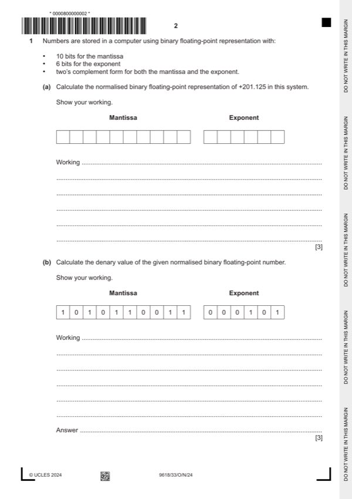
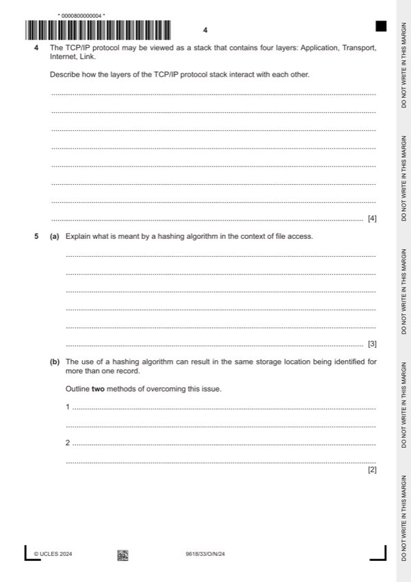
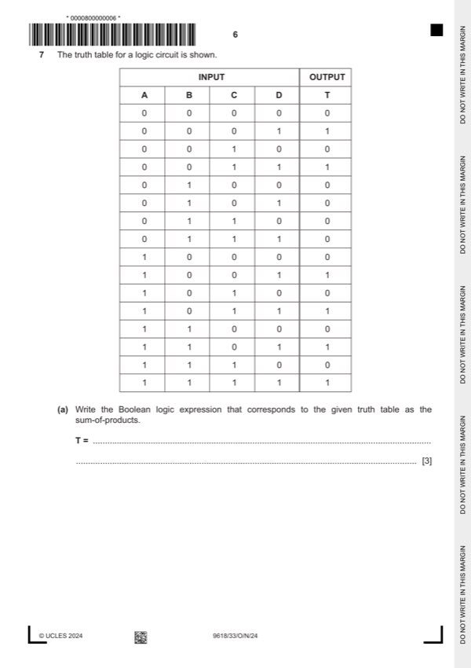
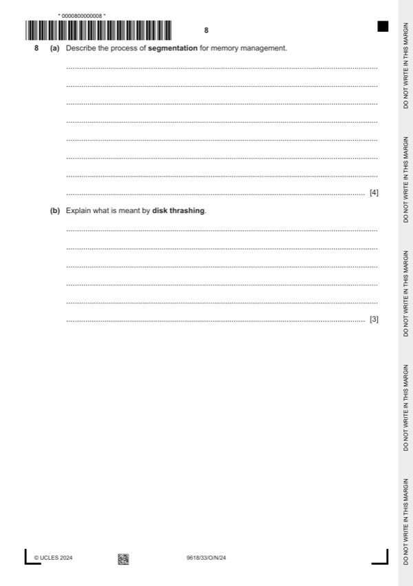
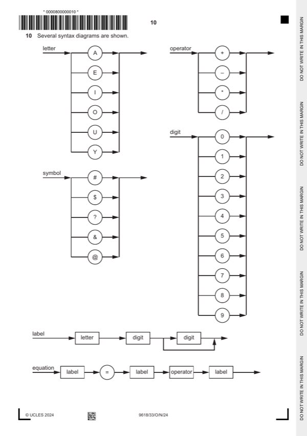
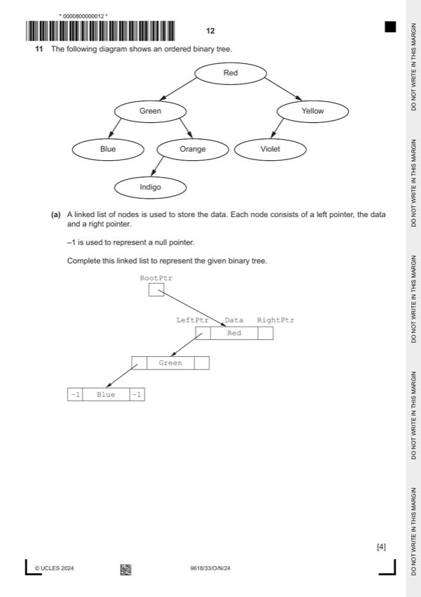

Question 0
Part 0 — solution
1 1 0 0 1 0 0 1 0 0 0 1 0 0 0
Mark points
- Include the ideas shown in the solution above.
Part 0 — solution
0 1 Red 2
Mark points
- Include the ideas shown in the solution above.
Step-by-step solutions based on the mark scheme (not a mark-scheme dump).
Part 0 — solution
Part 0 — solution

Part 1(a) — solution
Part 1(b) — solution
Part 2 — solution
Part 3(a) — solution
Part 3(b) — solution

Part 4 — solution
Part 5(a) — solution
Part 5(b) — solution
Part 5 — solution
Part 6(a) — solution
Part 6(b) — solution
Part 6 — solution

Part 7(a) — solution
Part 7(b) — solution
Answer: AB
Part 7(c) — solution
Answer: AB
Part 7(d)(i) — solution
Part 7(d)(ii) — solution

Part 8(a) — solution
Part 8(b) — solution
Part 9(a) — solution
Part 9(b) — solution

Part 10(a) — solution
Part 10(b)(i) — solution
Part 10(b)(ii) — solution

Part 11(a) — solution
Part 11(b) — solution
Part 11(c) — solution